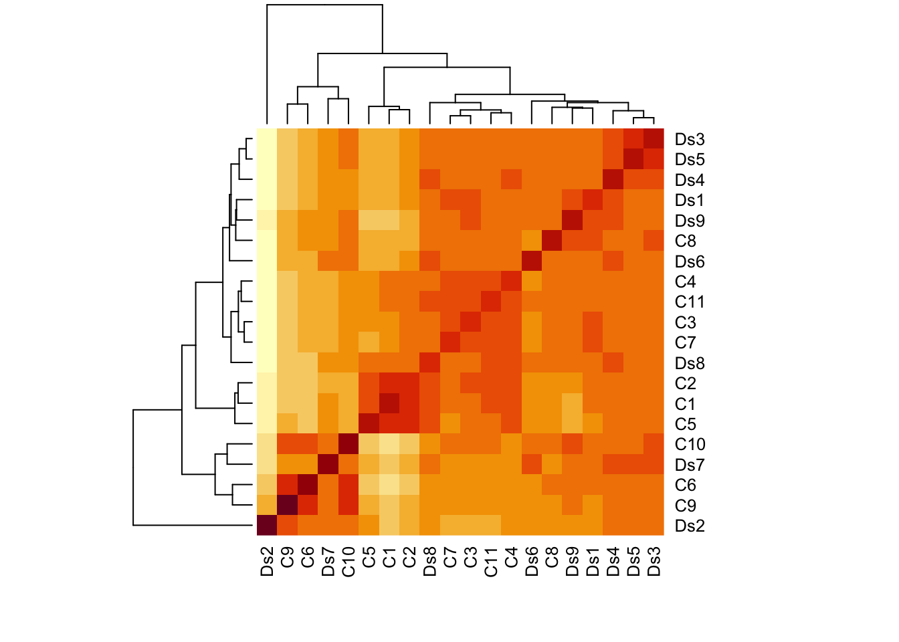
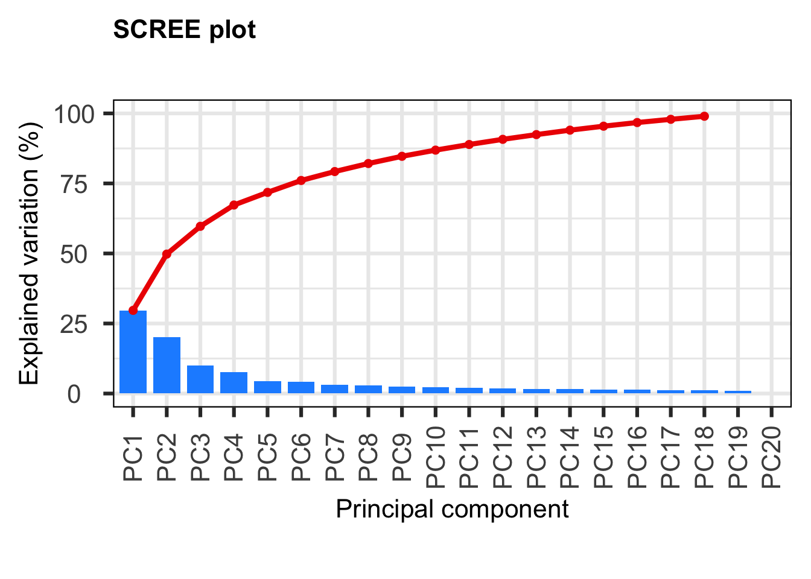
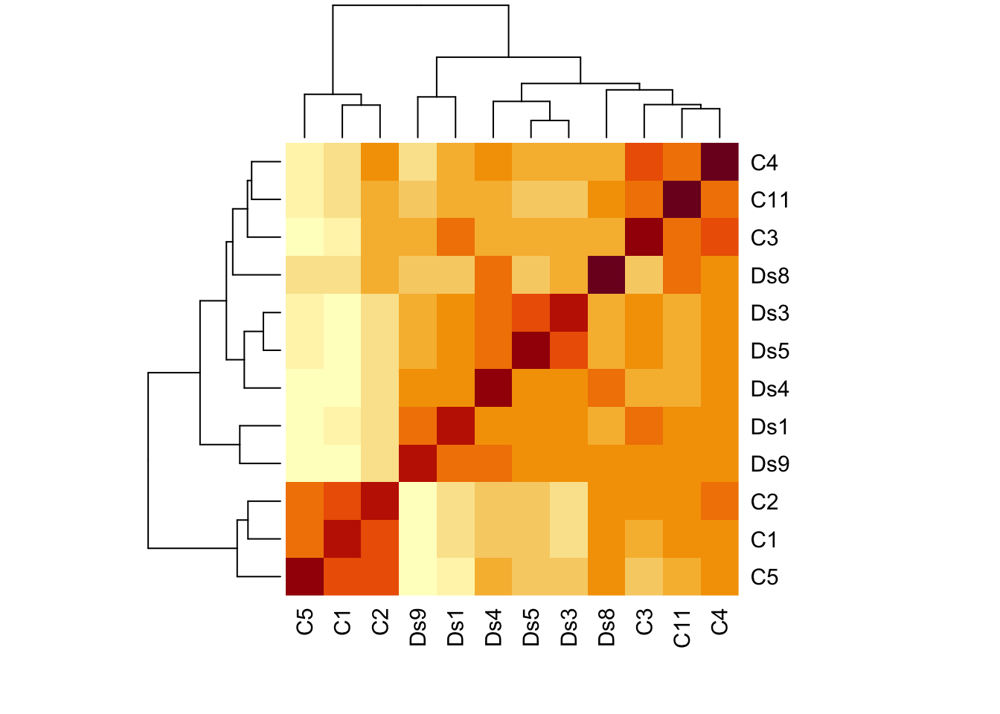
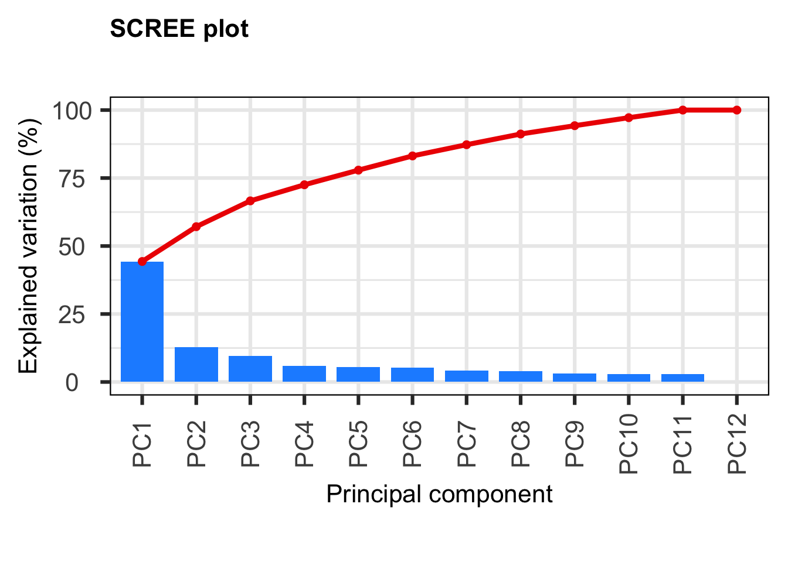
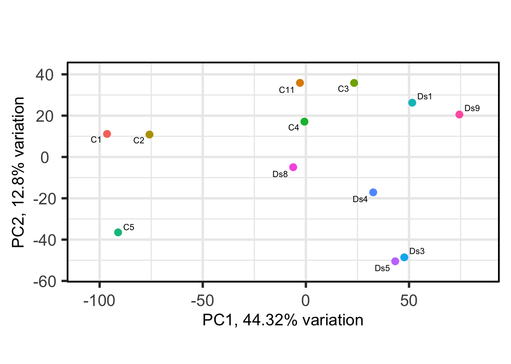

Last updated: 2022-07-15
Checks: 7 0
Knit directory: HumanMultiomics/
This reproducible R Markdown analysis was created with workflowr (version 1.7.0). The Checks tab describes the reproducibility checks that were applied when the results were created. The Past versions tab lists the development history.
Great! Since the R Markdown file has been committed to the Git repository, you know the exact version of the code that produced these results.
Great job! The global environment was empty. Objects defined in the global environment can affect the analysis in your R Markdown file in unknown ways. For reproduciblity it’s best to always run the code in an empty environment.
The command set.seed(20220715) was run prior to running the code in the R Markdown file. Setting a seed ensures that any results that rely on randomness, e.g. subsampling or permutations, are reproducible.
Great job! Recording the operating system, R version, and package versions is critical for reproducibility.
Nice! There were no cached chunks for this analysis, so you can be confident that you successfully produced the results during this run.
Great job! Using relative paths to the files within your workflowr project makes it easier to run your code on other machines.
Great! You are using Git for version control. Tracking code development and connecting the code version to the results is critical for reproducibility.
The results in this page were generated with repository version 5b37a94. See the Past versions tab to see a history of the changes made to the R Markdown and HTML files.
Note that you need to be careful to ensure that all relevant files for the analysis have been committed to Git prior to generating the results (you can use wflow_publish or wflow_git_commit). workflowr only checks the R Markdown file, but you know if there are other scripts or data files that it depends on. Below is the status of the Git repository when the results were generated:
Ignored files:
Ignored: .DS_Store
Ignored: analysis/.DS_Store
Untracked files:
Untracked: HumanMultiomics.R
Untracked: data/human_hippo_samplesheet.xlsx
Untracked: data/raw_counts_human_hippo_matrix_coding.txt
Unstaged changes:
Modified: analysis/about.Rmd
Modified: analysis/index.Rmd
Note that any generated files, e.g. HTML, png, CSS, etc., are not included in this status report because it is ok for generated content to have uncommitted changes.
These are the previous versions of the repository in which changes were made to the R Markdown (analysis/differential_expression_analysis.Rmd) and HTML (docs/differential_expression_analysis.html) files. If you’ve configured a remote Git repository (see ?wflow_git_remote), click on the hyperlinks in the table below to view the files as they were in that past version.
| File | Version | Author | Date | Message |
|---|---|---|---|---|
| html | ac97638 | neurodevdisorder | 2022-07-15 | Build site. |
| Rmd | e1a04c1 | neurodevdisorder | 2022-07-15 | Differential expression analysis |
| html | e6b258c | neurodevdisorder | 2022-07-15 | Build site. |
| Rmd | 155f31d | neurodevdisorder | 2022-07-15 | Differential expression analysis |
This is the differential expression analysis from the total RNA sequencing experiment performed on postmortem hippocampus and cortex obtained from Down syndrome and control individuals.
C1 C2 C3 C4 C5 C6 C7 C8 C9 C10 C11 Ds1 Ds2 Ds3
ENSG00000186092 0 0 0 0 0 0 0 0 0 0 0 0 0 0
ENSG00000284733 0 0 0 0 0 0 0 0 0 0 0 0 0 0
ENSG00000284662 0 0 0 0 0 0 0 0 0 0 0 0 0 0
ENSG00000187634 9 9 36 40 8 11 12 69 6 28 12 26 40 29
ENSG00000188976 496 624 1482 1417 558 454 1085 1249 270 477 799 1313 351 629
ENSG00000187961 13 20 89 66 12 34 82 131 13 30 25 105 44 45
Ds4 Ds5 Ds6 Ds7 Ds8 Ds9
ENSG00000186092 0 0 0 0 0 0
ENSG00000284733 0 0 0 0 0 0
ENSG00000284662 0 0 0 0 0 0
ENSG00000187634 46 47 21 41 26 22
ENSG00000188976 1051 798 755 570 887 1260
ENSG00000187961 95 98 82 47 32 100 [1] Cont Cont Cont Cont Cont Cont Cont Cont Cont Cont Cont DS DS DS DS
[16] DS DS DS DS DS
Levels: Cont DS
| Version | Author | Date |
|---|---|---|
| e6b258c | neurodevdisorder | 2022-07-15 |
[1] TRUE-- removing the lower 10% of variables based on varianceWarning: Removed 2 row(s) containing missing values (geom_path).Warning: Removed 2 rows containing missing values (geom_point).
| Version | Author | Date |
|---|---|---|
| e6b258c | neurodevdisorder | 2022-07-15 |
| Version | Author | Date |
|---|---|---|
| e6b258c | neurodevdisorder | 2022-07-15 |
C1 C2 C3 C4 C5 C11 Ds1 Ds3 Ds4 Ds5 Ds8 Ds9
ENSG00000186092 0 0 0 0 0 0 0 0 0 0 0 0
ENSG00000284733 0 0 0 0 0 0 0 0 0 0 0 0
ENSG00000284662 0 0 0 0 0 0 0 0 0 0 0 0
ENSG00000187634 9 9 36 40 8 12 26 29 46 47 26 22
ENSG00000188976 496 624 1482 1417 558 799 1313 629 1051 798 887 1260
ENSG00000187961 13 20 89 66 12 25 105 45 95 98 32 100 [1] Cont Cont Cont Cont Cont Cont DS DS DS DS DS DS
Levels: Cont DS
| Version | Author | Date |
|---|---|---|
| e6b258c | neurodevdisorder | 2022-07-15 |
[1] TRUE-- removing the lower 10% of variables based on variance
| Version | Author | Date |
|---|---|---|
| e6b258c | neurodevdisorder | 2022-07-15 |

| Version | Author | Date |
|---|---|---|
| e6b258c | neurodevdisorder | 2022-07-15 |
keep_hth_filt_coding2
FALSE TRUE
5747 14221 group lib.size norm.factors
C1 Cont 26747264 0.9014953
C2 Cont 28753065 0.9295325
C3 Cont 31216269 1.0367848
C4 Cont 34181183 0.9965316
C5 Cont 24231673 0.9048995
C11 Cont 23897314 0.9656747
Ds1 DS 27072147 1.0308510
Ds3 DS 17654033 1.1121233
Ds4 DS 27713628 1.0497314
Ds5 DS 25307466 1.1031263
Ds8 DS 26297451 0.9796220
Ds9 DS 24491826 1.0163664Iteration 1: Re-fitting GLM.Re-estimating trended dispersion.Re-estimating tagwise dispersion.Iteration 2: Re-fitting GLM. Re-estimating trended dispersion.
Re-estimating tagwise dispersion.
Iteration 3: Re-fitting GLM. Re-estimating trended dispersion.
Re-estimating tagwise dispersion.
Iteration 4: Re-fitting GLM. Re-estimating trended dispersion.
Re-estimating tagwise dispersion.
Iteration 5: Re-fitting GLM. Re-estimating trended dispersion.
Re-estimating tagwise dispersion.
Iteration 6: Re-fitting GLM. Re-estimating trended dispersion.
Re-estimating tagwise dispersion. group_hth_filt_coding2DS
Down 2205
NotSig 9394
Up 2622
sessionInfo()R version 4.1.0 (2021-05-18)
Platform: x86_64-apple-darwin17.0 (64-bit)
Running under: macOS Catalina 10.15.7
Matrix products: default
BLAS: /Library/Frameworks/R.framework/Versions/4.1/Resources/lib/libRblas.dylib
LAPACK: /Library/Frameworks/R.framework/Versions/4.1/Resources/lib/libRlapack.dylib
locale:
[1] en_US.UTF-8/en_US.UTF-8/en_US.UTF-8/C/en_US.UTF-8/en_US.UTF-8
attached base packages:
[1] grid stats4 stats graphics grDevices utils datasets
[8] methods base
other attached packages:
[1] circlize_0.4.14
[2] ComplexHeatmap_2.8.0
[3] pathview_1.32.0
[4] forcats_0.5.1
[5] stringr_1.4.0
[6] purrr_0.3.4
[7] readr_2.1.2
[8] tidyr_1.2.0
[9] tibble_3.1.6
[10] tidyverse_1.3.1
[11] karyoploteR_1.18.0
[12] regioneR_1.24.0
[13] ggridges_0.5.3
[14] enrichplot_1.12.3
[15] clusterProfiler_4.0.5
[16] ggbio_1.40.0
[17] rtracklayer_1.52.1
[18] TxDb.Hsapiens.UCSC.hg38.knownGene_3.13.0
[19] GenomicFeatures_1.44.2
[20] GenomicRanges_1.44.0
[21] GenomeInfoDb_1.28.4
[22] pcaExplorer_2.18.0
[23] org.Hs.eg.db_3.13.0
[24] AnnotationDbi_1.54.1
[25] IRanges_2.28.0
[26] S4Vectors_0.32.3
[27] Biobase_2.54.0
[28] BiocGenerics_0.40.0
[29] DBI_1.1.2
[30] ggrepel_0.9.1
[31] openxlsx_4.2.5
[32] edgeR_3.34.1
[33] limma_3.50.1
[34] dplyr_1.0.8
[35] ggplot2_3.3.5
[36] workflowr_1.7.0
loaded via a namespace (and not attached):
[1] rsvd_1.0.5 Hmisc_4.6-0
[3] ps_1.6.0 Rsamtools_2.8.0
[5] foreach_1.5.2 rprojroot_2.0.2
[7] crayon_1.5.0 MASS_7.3-55
[9] nlme_3.1-155 backports_1.4.1
[11] reprex_2.0.1 GOSemSim_2.18.1
[13] rlang_1.0.2 XVector_0.32.0
[15] readxl_1.3.1 irlba_2.3.5
[17] SparseM_1.81 callr_3.7.0
[19] filelock_1.0.2 GOstats_2.58.0
[21] BiocParallel_1.28.3 rjson_0.2.21
[23] bit64_4.0.5 glue_1.6.2
[25] pheatmap_1.0.12 rngtools_1.5.2
[27] parallel_4.1.0 processx_3.5.2
[29] shinyAce_0.4.1 shinydashboard_0.7.2
[31] DOSE_3.18.3 haven_2.4.3
[33] tidyselect_1.1.2 SummarizedExperiment_1.22.0
[35] XML_3.99-0.9 GenomicAlignments_1.28.0
[37] xtable_1.8-4 magrittr_2.0.2
[39] evaluate_0.15 cli_3.2.0
[41] zlibbioc_1.40.0 rstudioapi_0.13
[43] whisker_0.4 bslib_0.3.1
[45] rpart_4.1.16 fastmatch_1.1-3
[47] ensembldb_2.16.4 treeio_1.16.2
[49] shiny_1.7.1 BiocSingular_1.8.1
[51] xfun_0.30 clue_0.3-60
[53] cluster_2.1.2 tidygraph_1.2.0
[55] TSP_1.2-0 KEGGREST_1.32.0
[57] biovizBase_1.40.0 threejs_0.3.3
[59] ape_5.6-2 dendextend_1.15.2
[61] Biostrings_2.60.2 png_0.1-7
[63] reshape_0.8.8 withr_2.5.0
[65] shinyBS_0.61 bitops_1.0-7
[67] ggforce_0.3.3 RBGL_1.68.0
[69] plyr_1.8.6 cellranger_1.1.0
[71] GSEABase_1.54.0 AnnotationFilter_1.16.0
[73] dqrng_0.3.0 pillar_1.7.0
[75] GlobalOptions_0.1.2 cachem_1.0.6
[77] fs_1.5.2 GetoptLong_1.0.5
[79] DelayedMatrixStats_1.14.3 vctrs_0.3.8
[81] ellipsis_0.3.2 generics_0.1.2
[83] NMF_0.23.0 tools_4.1.0
[85] foreign_0.8-82 munsell_0.5.0
[87] tweenr_1.0.2 fgsea_1.18.0
[89] DelayedArray_0.18.0 fastmap_1.1.0
[91] compiler_4.1.0 httpuv_1.6.5
[93] pkgmaker_0.32.2 plotly_4.10.0
[95] GenomeInfoDbData_1.2.6 gridExtra_2.3
[97] lattice_0.20-45 AnnotationForge_1.34.1
[99] utf8_1.2.2 later_1.3.0
[101] BiocFileCache_2.0.0 jsonlite_1.8.0
[103] GGally_2.1.2 scales_1.1.1
[105] ScaledMatrix_1.0.0 graph_1.70.0
[107] sparseMatrixStats_1.4.2 tidytree_0.3.9
[109] genefilter_1.74.1 lazyeval_0.2.2
[111] promises_1.2.0.1 doParallel_1.0.17
[113] latticeExtra_0.6-29 checkmate_2.0.0
[115] rmarkdown_2.13 cowplot_1.1.1
[117] webshot_0.5.2 dichromat_2.0-0
[119] downloader_0.4 BSgenome_1.60.0
[121] igraph_1.2.11 survival_3.3-1
[123] yaml_2.3.5 htmltools_0.5.2
[125] memoise_2.0.1 VariantAnnotation_1.38.0
[127] BiocIO_1.2.0 locfit_1.5-9.5
[129] seriation_1.3.3 PCAtools_2.4.0
[131] graphlayouts_0.8.0 viridisLite_0.4.0
[133] digest_0.6.29 assertthat_0.2.1
[135] mime_0.12 rappdirs_0.3.3
[137] registry_0.5-1 RSQLite_2.2.10
[139] yulab.utils_0.0.4 data.table_1.14.2
[141] blob_1.2.2 labeling_0.4.2
[143] splines_4.1.0 Formula_1.2-4
[145] Cairo_1.5-15 OrganismDbi_1.34.0
[147] ProtGenerics_1.26.0 RCurl_1.98-1.6
[149] broom_0.7.12 hms_1.1.1
[151] modelr_0.1.8 colorspace_2.0-3
[153] base64enc_0.1-3 BiocManager_1.30.16
[155] shape_1.4.6 aplot_0.1.2
[157] nnet_7.3-17 sass_0.4.0
[159] Rcpp_1.0.8.3 fansi_1.0.2
[161] tzdb_0.2.0 R6_2.5.1
[163] lifecycle_1.0.1 zip_2.2.0
[165] curl_4.3.2 jquerylib_0.1.4
[167] DO.db_2.9 Matrix_1.4-0
[169] qvalue_2.24.0 RColorBrewer_1.1-2
[171] iterators_1.0.14 topGO_2.44.0
[173] htmlwidgets_1.5.4 bamsignals_1.24.0
[175] beachmat_2.8.1 polyclip_1.10-0
[177] biomaRt_2.48.3 crosstalk_1.2.0
[179] shadowtext_0.1.1 gridGraphics_0.5-1
[181] rvest_1.0.2 htmlTable_2.4.0
[183] patchwork_1.1.1 KEGGgraph_1.52.0
[185] codetools_0.2-18 matrixStats_0.61.0
[187] lubridate_1.8.0 GO.db_3.13.0
[189] getPass_0.2-2 prettyunits_1.1.1
[191] dbplyr_2.1.1 gridBase_0.4-7
[193] gtable_0.3.0 git2r_0.30.1
[195] highr_0.9 ggfun_0.0.5
[197] httr_1.4.2 stringi_1.7.6
[199] progress_1.2.2 reshape2_1.4.4
[201] farver_2.1.0 heatmaply_1.3.0
[203] annotate_1.70.0 viridis_0.6.2
[205] Rgraphviz_2.36.0 ggtree_3.0.4
[207] DT_0.21 xml2_1.3.3
[209] bezier_1.1.2 restfulr_0.0.13
[211] geneplotter_1.70.0 ggplotify_0.1.0
[213] Category_2.58.0 DESeq2_1.32.0
[215] bit_4.0.4 scatterpie_0.1.7
[217] jpeg_0.1-9 MatrixGenerics_1.4.3
[219] ggraph_2.0.5 pkgconfig_2.0.3
[221] knitr_1.37